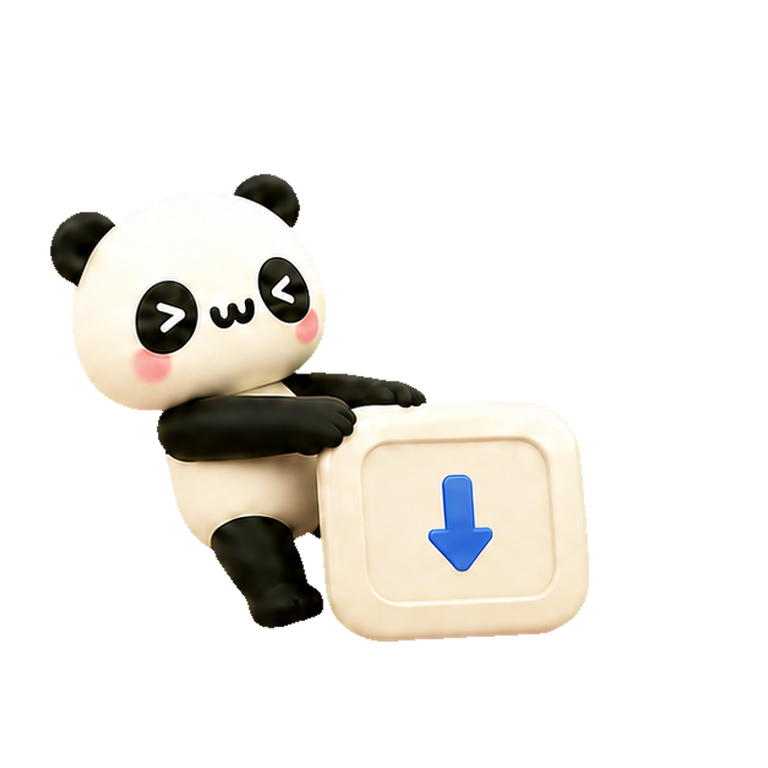
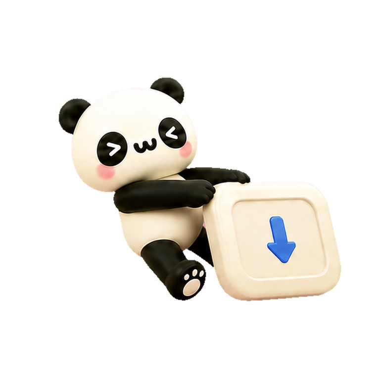
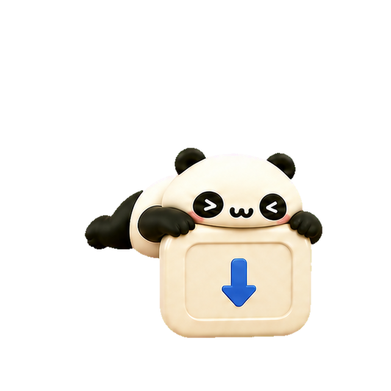
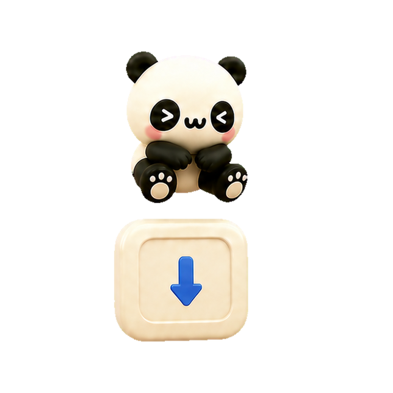
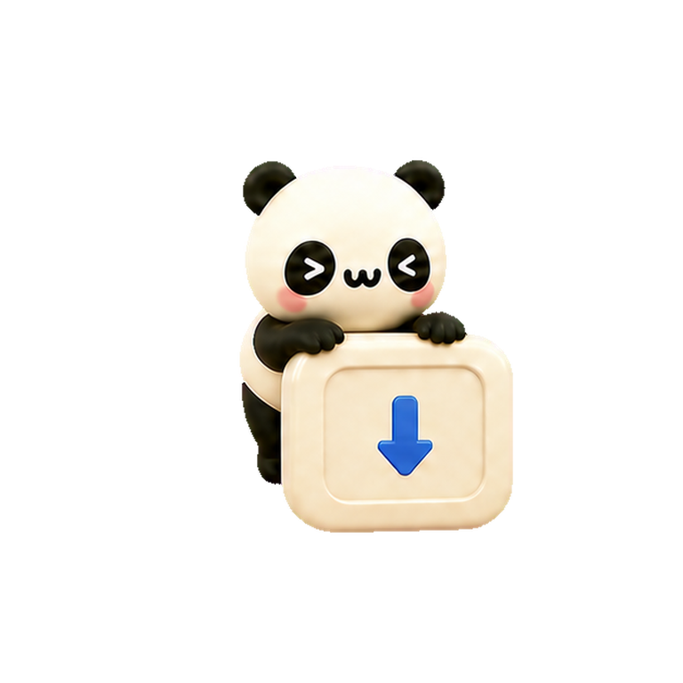
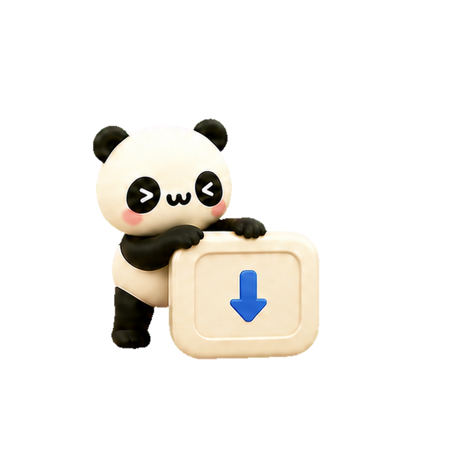

调整
自由定义控件位置、尺寸与视觉样式

画面串流、光标移动、页面滚动与多样输入，点开即可全屏操控


长按组件自由移动位置与尺寸，按需绑定快捷键与操作
自由定义控件位置、尺寸与视觉样式
按需绑定全局快捷键、媒体控制与鼠标动作
为不同软件建立专属小键盘，自动随软件切换
下载 DMG 镜像，将“奶猫妙控”拖入“应用程序”文件夹
按照系统引导开启辅助功能权限，以实现跨应用控制
确保两台设备连接同一 Wi-Fi，扫描 Mac 端的二维码即可秒连
长按桌面图标一键扫码，或从小组件随时查看连接状态与控制台


导演
多功能旋钮与快捷操作随剪辑、调色等工作区实时响应
PRO EDITION · 终极生产力
提供按周、按年订阅及终身买断方案 · 全平台统一解锁全部 Pro 专业特权
一次开通，同 Apple ID 下的 iPhone 与 iPad 间无缝同步共享

¥3/ 周约 ¥0.43 / 天
¥48/ 年折合仅 ¥4 / 月 · 每天 ¥0.13
¥98一次购买相当于仅 2 年年费
PRO EXCLUSIVE
开箱即用无门槛，将你的移动设备打造成专业级桌面物理副控
按设备原生像素细腻呈现 Mac 桌面，细小文字与界面细节锐利呈现，低延迟极速响应。
深度适配 DaVinci Resolve、PR、Final Cut Pro、剪映与 Codex，开箱即用的专属物理级布局。
单个方案容纳无上限的按键分页，轻扫手势即刻在剪辑、调色、日常多场景间丝滑切换。
集成体感/触控双模激光笔、局部放大镜、自适应智能提词器、现场音效与互动弹幕。
高精度连续参数微调、时间线穿梭与双向惯性滚动，比传统物理旋钮更加灵动精准。
虚拟摇杆、手柄按键映射与低延迟桌面串流，秒将 iPad / iPhone 变身掌上控制器。
在系统灵动岛与锁屏实时追踪视频渲染进度、后台构建任务与媒体播放状态。
历史草稿即搜即用、多行剪贴板与照片附件无线传输至 Mac，打通跨设备输入。
紧跟专业生产力与创意软件生态，持续获取官方团队深度定制的全新专属联动控制台。
无论选择订阅或永久买断，均享有完全相同的 Pro 权益。查看完整购买与订阅条款

需要。iPhone/iPad 与 Mac 通过本地局域网高速直接通信，无需外网连接，延迟更低更安全。
请在 Mac 的“系统设置 → 隐私与安全性 → 辅助功能”中确保已为“奶猫妙控”开启权限。
屏幕实时预览需要单独授予“屏幕录制”权限；常规按键、旋钮和触控板不受影响。
支持低延迟查看 Mac 桌面画面、通过虚拟触控板移动光标与双向滚动，并能使用文本键盘、实时键盘及无线语音输入。
在文本键盘中点击麦克风可将语音转为文字，编辑核对后一键发送；长按语音组件则可将手机麦克风作为无线麦克风传输至 Mac。
长按桌面 App 图标在快捷菜单中选择“扫码配对”，或直接点击奶猫妙控桌面小组件。
在手机端打开“设备与配对”页面，扫描新 Mac 菜单栏中的二维码即可快速切换连接。
可以。核心基础小键盘、基础按键与常用系统控制完全免费开放；Pro 会员进一步解锁专业预置布局、Retina 超清串流、多桌面、游戏模式及演示辅助工具。
请在 iPhone 或 iPad 端进入“设置 → 奶猫妙控 Pro”进行购买或恢复。所有交易由 Apple App Store 安全处理，Mac 端无需重复付费。
绝不上传。所有控制指令与屏幕画面均在本地局域网内点对点传输，不经过任何云端服务器，充分保护您的隐私与数据安全。
支持运行 macOS 13 (Ventura) 及更高版本的 Mac 设备，Universal 通用架构原生适配 Apple Silicon (M系列芯片) 与 Intel 处理器。






下载 DMG 安装包，将奶猫妙控拖入“应用程序”，一扫即连macOS 13+ · 原生支持 Apple 芯片与 Intel
下载